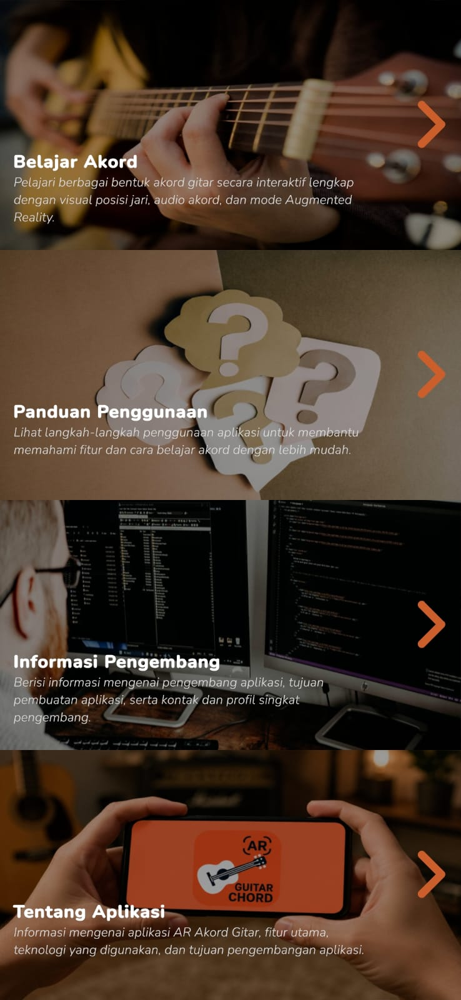
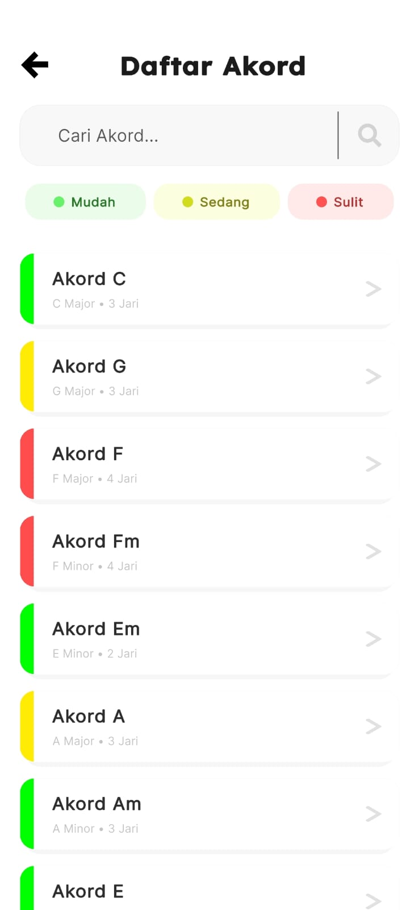
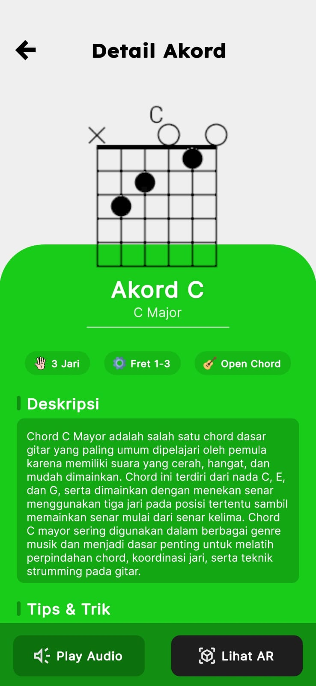
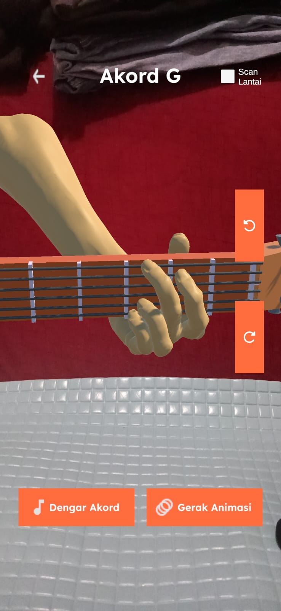

Rasakan pengalaman belajar akord gitar yang lebih nyata dengan Augmented Reality. Lihat posisi jari, dengarkan suara akord, dan pelajari gerakannya langsung melalui visualisasi 3D interaktif.
Nikmati pengalaman belajar akord gitar yang lebih interaktif melalui AR, animasi posisi jari, audio akord, dan tampilan yang mudah digunakan.
Akses menu belajar akord, panduan penggunaan, dan informasi aplikasi dengan mudah melalui tampilan yang rapi dan nyaman digunakan.
Cari akord yang ingin dipelajari dan gunakan filter tingkat kesulitan (Mudah, Sedang, Sulit).
Pelajari setiap akord melalui visualisasi posisi jari, penjelasan akord, animasi gerakan, dan audio yang membantu memahami cara bermain dengan lebih mudah.
Lihat posisi jari gitar secara langsung melalui teknologi Augmented Reality dengan model 3D interaktif yang dapat diputar, digeser, diperbesar, serta dilengkapi animasi gerakan akord.




Unduh GuitarChord. sekarang dan rasakan pengalaman belajar gitar melalui Augmented Reality, visualisasi 3D, dan animasi akord langsung dari perangkat Android Anda.